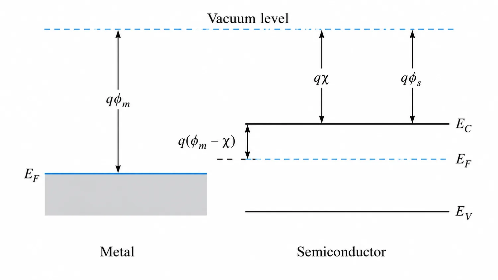
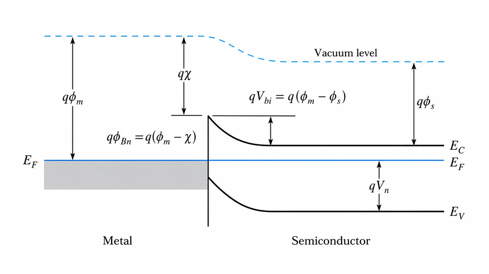
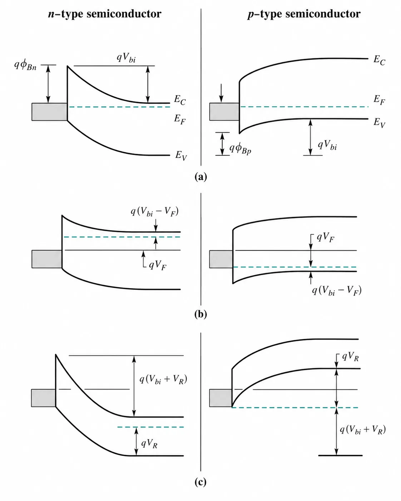
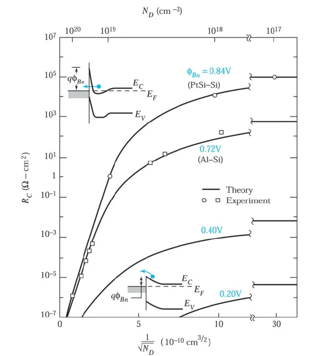

7.1.1 Physical picture: work function, electron affinity, and barrier height
Professional band-diagram reconstruction
This section recreates the ideal metal–semiconductor energy-band picture from the chapter using cleaner notation, larger labels, and a tutorial-friendly layout. Panel (a) shows the isolated materials before contact. Panel (b) shows the metal–semiconductor contact at thermal equilibrium, where the Fermi level is flat and the semiconductor bands bend to satisfy electrostatic equilibrium.
Before contact
The metal work function \(\phi_m\) and the semiconductor work function \(\phi_s\) are generally different. The electron affinity \(\chi\) measures the energy gap from the vacuum level down to the conduction-band edge \(E_C\).
After contact
Once contact is made, the Fermi levels align at equilibrium. The conduction and valence bands bend in the semiconductor, creating the built-in potential \(V_{bi}\) and the depletion region under the Schottky contact.
Figure (a) · Isolated metal + n-type semiconductor

Figure (b) · Metal–semiconductor contact at thermal equilibrium

7.1.2 Bias effects in n-type and p-type Schottky contacts
Professional band diagrams for equilibrium, forward bias, and reverse bias
This figure summarizes how a metal–semiconductor contact behaves for both n-type and p-type semiconductors. Row (a) shows thermal equilibrium, row (b) shows forward bias, and row (c) shows reverse bias. These diagrams are especially useful for understanding why the MESFET gate behaves as a rectifying Schottky contact.

7.1.3 Advanced math: depletion width, electric field, and capacitance
Using the depletion approximation for a uniformly doped n-type semiconductor, the charge density is approximately \(\rho=qN_D\) inside the depletion region. Poisson's equation then gives a linearly varying electric field.
7.1.3 Ohmic contacts: why high doping reduces contact resistance
An ohmic contact should pass current with a small voltage drop compared with the active device region. Low-resistance ohmic behavior can be obtained by lowering the barrier height, using very high doping, or both. High doping narrows the depletion width and increases tunneling probability.
